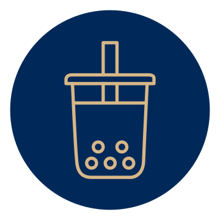

Taller de Bubble Tea & Iced Coffee
1 día
5 horas
¿Qué aprenderás?
A elaborar bebidas en tendencia con combinaciones de sabor y textura.
A elaborar tapioca, y preparar distintos tipos de té así como iced coffee.
Sobre distintos insumos que se pueden aprovechar para la elaboración del Bubble Tea.
Sobre los beneficios y bondades del té y el café y su versatilidad para crear bebidas calientes, frías o
frappés.
Objetivo
- ¡El bubble tea es una opción de bebida creativa y divertida! Combina sabores, toppings, textura,
consistencia y presentación.
- Forma parte de la tendencia en bebidas moleculares en donde podemos manipular los estados de la materia
mejorando la experiencia del consumidor
- Revisaremos la preparación del bubble tea: tapioca, distintos tipos de té y iced coffee.
Temario
- ¿Qué es el Bubble Tea?
- Su historia
- Bebidas Moleculares:
- Toppings
- Tapioca:
- Características
- Beneficios
- Cuidados
- Perlas Explosivas
- Jellies
- Bases para Bubble Tea:
- Té y sus beneficios
- Té negro, verde, rojo, oolong
- Café y sus beneficios
- Iced Coffee
- Su popularidad en México
- Bebidas de moda con texturas diversas calientes y frías
- Menú